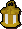
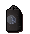
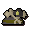
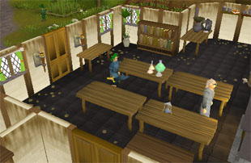

")
Firemaking - Other Ignitable Items
Introduction | Torches, Candles and Mining Helmets | Candle Lanterns
Oil Lamps and Oil Lanterns | Bullseye Lanterns
Oil Lamps and Oil Lanterns | Bullseye Lanterns
Introduction

The table below lists the various items that can be lit using a tinderbox. You do not gain Firemaking experience for using these items as you can continually light, extinguish and re-light these objects; they do, however, give access to areas that an adventurer cannot enter without light.
The items below are not tradable when they are lit: this is because each type of item requires a different Firemaking level to light them.
| Type of Item | Image (unlit) | Image (lit) | Level required |
| Torches | ![[image]](../../img/main/kbase/items/lanturns_candle_torch/unlit_torch.gif) |
![[image]](../../img/main/kbase/items/lanturns_candle_torch/torch_lit.gif) |
1 |
| Candles | ![[image]](../../img/main/kbase/items/lanturns_candle_torch/unlit_candle.gif) |
![[image]](../../img/main/kbase/items/lanturns_candle_torch/white_candle_lit.gif) |
1 |
| Candle lanterns | ![[image]](../../img/main/kbase/items/lanturns_candle_torch/unlit_candle_lantern.gif) |
![[image]](../../img/main/kbase/items/lanturns_candle_torch/candle_lantern.gif) |
4 |
| Oil lamps | ![[image]](../../img/main/kbase/items/lanturns_candle_torch/unlit_oil_lamp.gif) |
![[image]](../../img/main/kbase/items/lanturns_candle_torch/oil_lamp_lit.gif) |
12 |
| Oil lanterns | ![[image]](../../img/main/kbase/items/lanturns_candle_torch/unlit_oil_lantern.gif) |
![[image]](../../img/main/kbase/items/lanturns_candle_torch/oil_lantern_unlit.gif) |
26 |
| Bug lanterns | ![[image]](../../img/main/kbase/items/lanturns_candle_torch/buglantern_unlit.gif) |
 |
33 |
| Bullseye lanterns |  |
![[image]](../../img/main/kbase/items/lanturns_candle_torch/bullseye_lit.gif) |
49 |
| Cave goblin mining helmets |  |
![[image]](../../img/main/kbase/items/lanturns_candle_torch/lit_cave_goblin_mining_helmet.gif) |
65 |
You can learn about making lanterns by talking to the candle seller who stands outside the entrance to Lumbridge Swamp Dungeon. He will try to sell you a candle, but if you keep talking to him, he will briefly mention lanterns. Ask him to elaborate and he will tell you all about them in more detail. Now you will have the knowledge of lantern-making and you can begin to construct one.
To make any of the above lanterns you will have to make glass. Please refer to the glass making guide in the Crafting section of the Manual for instructions on how to do so. Once you have used the molten glass with a glassblowing pipe you will be given a series of options relating to which glass products you can make, be it a vial, an orb, a beer glass, a candle lantern, an oil lamp, a fish bowl or a lantern lens.
Torches, Candles and Mining Helmets
Torches can be bought from the general store in Tai Bwo Wannai on Karamja.
Candles can be bought from the candle shop, west of the bank in Catherby, or from the general store in Tai Bwo Wannai on Karamja. Black candles are a members' quest item from the quest Merlin's Crystal . They cannot be bought in any shop, but if you don't want to venture through the quest, you can trade it with another player.
The goblin mining helmets are dropped by the cave goblins in the caves under Lumbridge Castle.
Candle Lanterns
Use the candle on the lantern to place it inside, though be aware that the candle cannot be removed once it is placed in the lantern. Once the lantern is fully constructed, light using a tinderbox. To extinguish the lantern simply click on it.
Oil lamps and bullseye lanterns use oil as a fuel source. Therefore, in order to make these types of lantern you will have to know how to make oil.
Oil Lamps and Oil Lanterns
To light the oil lamp, simply fill it with oil and use a tinderbox with the lamp to get the flame going.
To Make Oil
You will need one piece of swamp tar (per lantern requiring oil). Swamp tar respawns in the Lumbridge and Mort Myre Swamps.

Speak to the Chemist and tell him that 'yes', the conversation you wish to have with him is with regard to lamps. If you want instructions to make oil, say 'yes' to his next question. Otherwise, go to the right of the room and use the lamp oil still. To make oil, simply use swamp tar on the lamp oil still; to extract oil from the still, use an oil lamp or a bullseye lantern with it, which will fill the lamp (or lantern) with oil.
Note: You only need to add oil to the oil lamp or lantern once. There is no need to refill it.
Bullseye Lanterns
Click here to view the Firemaking FAQs

More articles in
Firemaking
|
|
|
Further Help
If this article does not help you, you may find the following sections of the RuneScape site helpful:
|
|